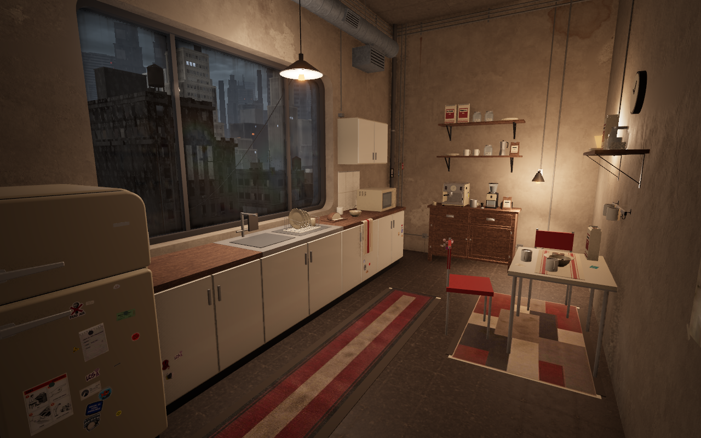
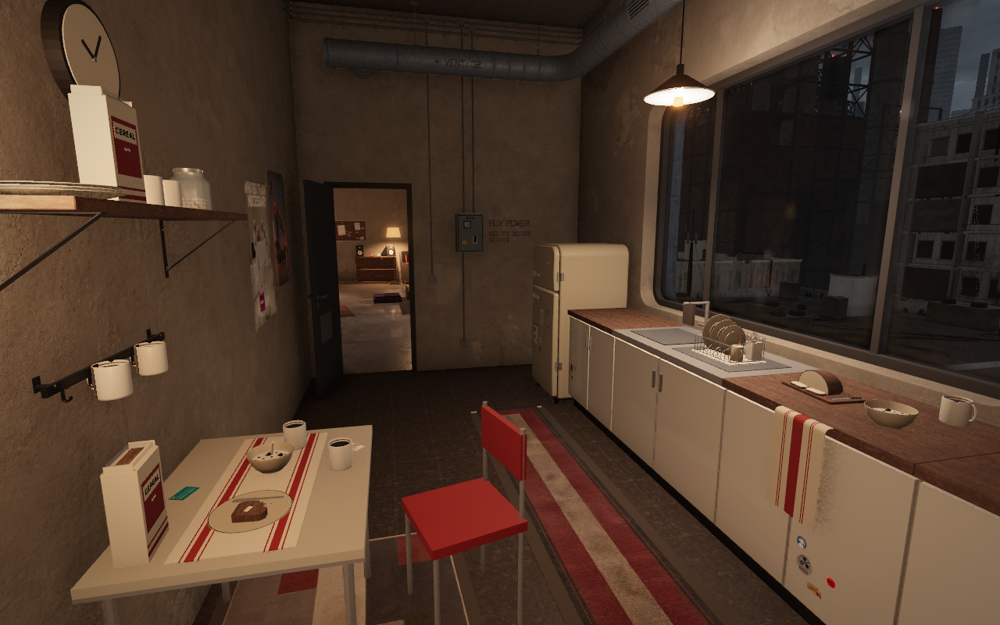
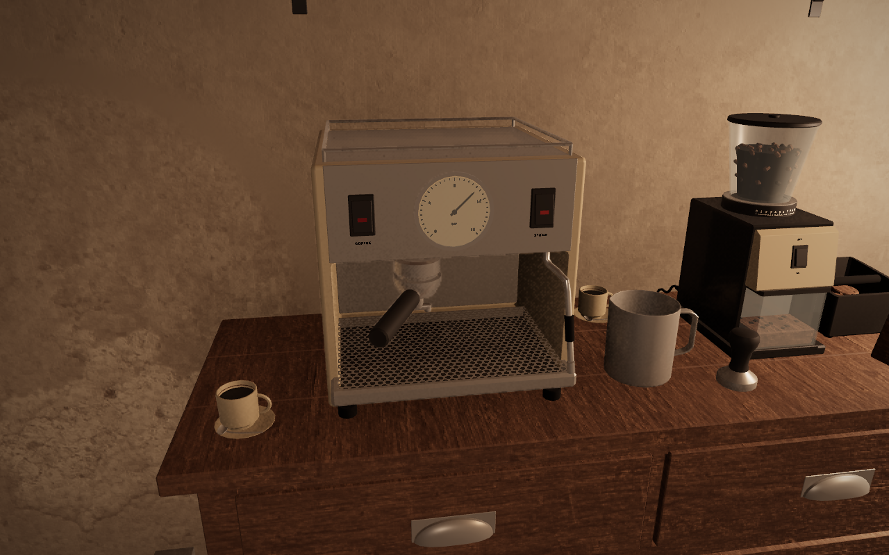

The finished kitchen
New: three comfort concepts and a visual critique · 9 October 2026.
Breakfast dishes, a stocked coffee corner, useful shelves, soft striped linen and warm light. Explore the live apartment · See the approved concepts.



The approved concepts
Two opposing views of one lived-in kitchen: coffee, warm light, useful shelves and everyday clutter.


Tap any picture to open it at full size. Finished room and concept artwork · 9 October 2026.